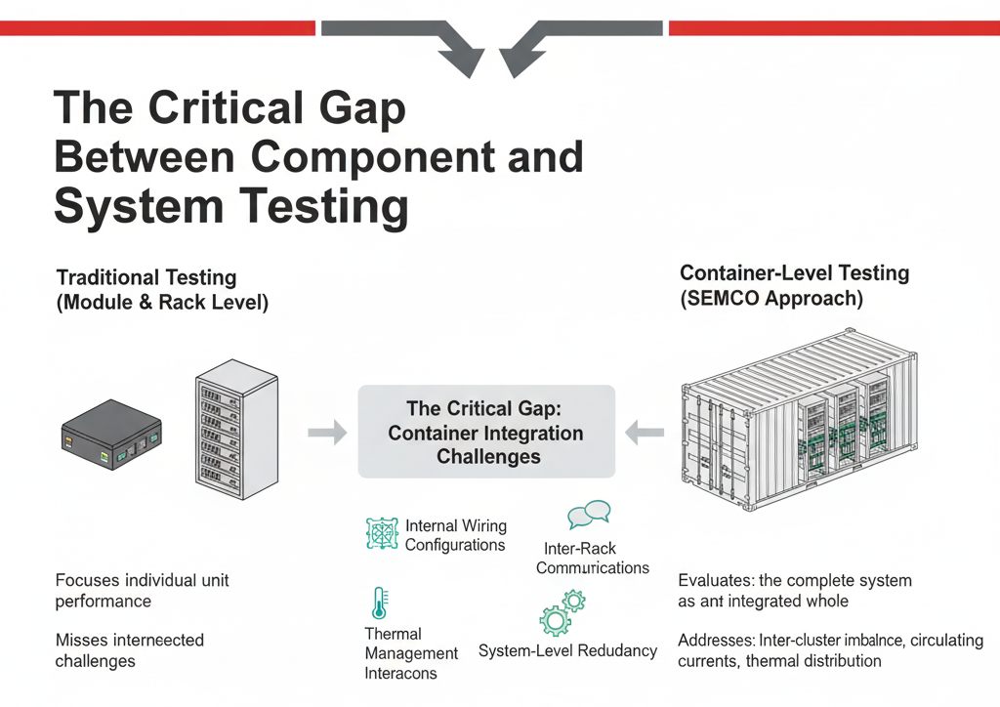
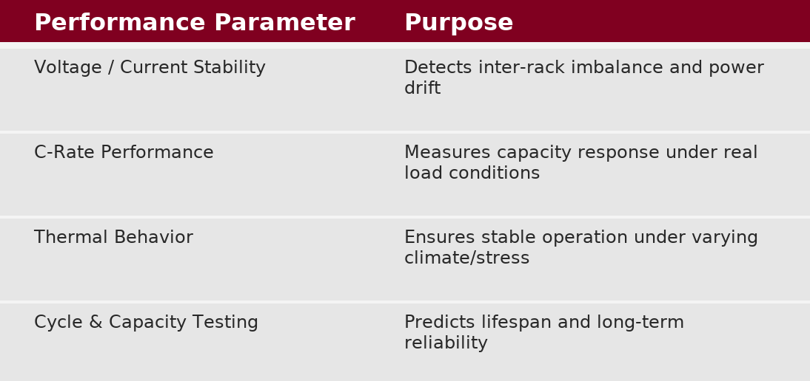
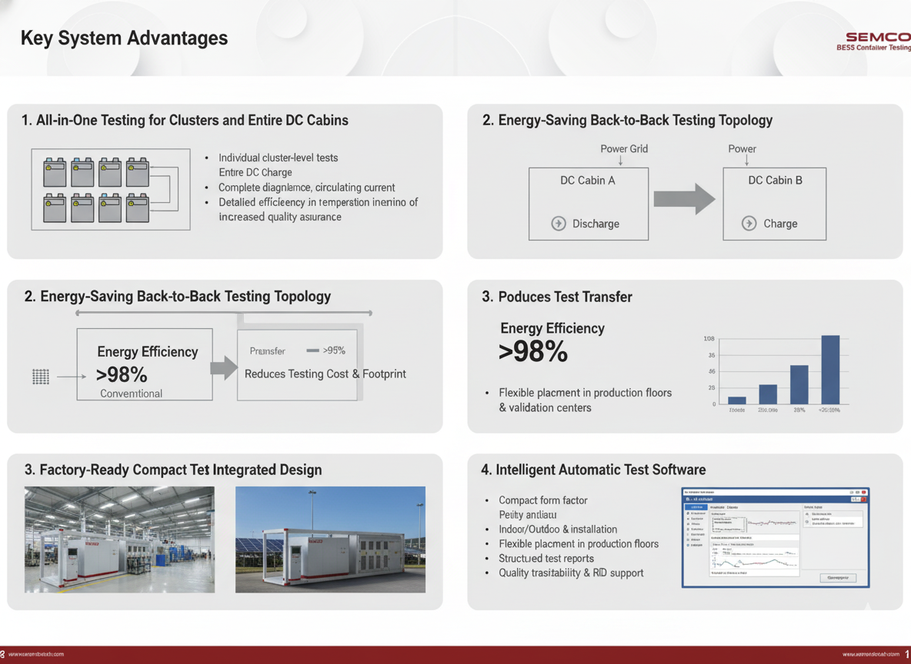
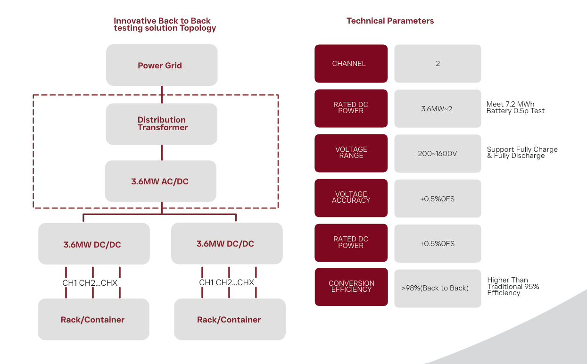

The battery energy storage system (BESS) manufacturing process involves multiple layers of validation, yet many integrators overlook a critical stage that determines real-world reliability. While individual battery pack and rack-level testing ensure component functionality, these evaluations occur in isolation. Once these units integrate into a complete container system, new complexities emerge that demand comprehensive validation before deployment.
The Critical Gap Between Component and System Testing
Traditional BESS manufacturing focuses on testing at the module and rack levels, verifying that each unit performs correctly independently. However, this approach misses the interconnected challenges that arise during container integration. When multiple racks connect within a container, factors such as internal wiring configurations, inter-rack communication protocols, thermal management interactions, and system-level redundancy mechanisms create a complex ecosystem that unit-level testing cannot capture.

Container-level testing bridges this essential gap by evaluating the complete system as an integrated whole. This comprehensive approach addresses inter-cluster imbalance detection, identifies circulating current issues, and validates thermal distribution across the entire container before the system reaches operational sites. For energy storage manufacturers targeting both domestic and international markets, this testing stage has become non-negotiable for quality assurance and risk mitigation.
Understanding Container Testing Technology
Modern BESS container testing systems operate on sophisticated architectures designed specifically for large-scale energy storage validation. Contemporary solutions available in capacities ranging from 2.5MW to 5MW employ dual-channel configurations that enable simultaneous testing of multiple containers or cabin units.
The voltage operating range spans 200V to 1600V, accommodating various battery chemistry configurations including LFP and NMC systems commonly deployed in Indian installations. Voltage accuracy specifications of ±0.5% across the full scale ensure precise characterization of battery response across the entire operating envelope, critical for identifying subtle performance inconsistencies that could compromise long-term reliability.
Why Container-Level Testing Matters
Most manufacturers already perform cell-level, module-level, and rack-level evaluations, but once racks are interconnected and integrated inside a container, entirely new variables emerge:
- Wiring architecture and interconnection resistance
- Communication and control coordination between racks
- Thermal management behavior during full power operation
- Circulating currents and rack-to-rack imbalance
Pack-level accuracy does not guarantee container-level reliability.
This is why container testing is a critical step in production and pre-dispatch validation. The BESS Container Testing System evaluates:

This ensures safety, performance consistency, and reduced operational risk during field deployment.
What the BESS Container Testing System Does
The system performs charge and discharge testing of battery clusters and DC cabins used in large-scale energy storage solutions. It captures real-time performance data such as voltage, current, power output, temperature profiles, and state-of-charge capacity. This multi-dimensional data collection enables four distinct testing protocols, each addressing specific performance and reliability concerns:
Cycle life testing evaluates how the battery system responds through repeated charge-discharge cycles, predicting degradation patterns and remaining useful life under various operating conditions. Capacity testing establishes the actual usable energy storage versus nameplate specifications, critical for confirming cost-of-energy projections and customer SLAs. Temperature behavior testing validates thermal management system effectiveness under diverse environmental conditions, from industrial ambient temperatures to controlled climate chambers.
Key System Advantages
1. All-in-One Testing for Clusters and Entire DC Cabins
The system supports both individual cluster-level tests and complete DC cabin charge/discharge testing, providing detailed diagnostics of imbalance, circulating current, and integration performance. This increases test efficiency and improves quality assurance accuracy.
2. Energy-Saving Back-to-Back Testing Topology
One of the most innovative features of this system is its back-to-back testing mode, where two DC cabins are connected in a closed-loop configuration:
- One cabin discharges → powers the other cabin’s charging cycle
- Minimal external grid power is consumed
- Energy efficiency exceeds 98%, compared to conventional ~95% systems
This drastically reduces testing energy cost and environmental footprint.

3. Factory-Ready Compact & Integrated Design
Its compact form factor supports:
- Indoor or outdoor installation
- Flexible placement in ESS production floors or validation centers
This makes it practical for mass production workflows and large-scale factory deployment.
4. Intelligent Automatic Test Software
The built-in automation platform:
- Runs custom and standardized test sequences
- Records & logs all performance data
- Generates structured test reports for quality traceability and R&D analysis
This supports faster decision-making, product improvement, and compliance documentation.

Connect With Semco Infratech
Discover how Semco Infratech's container testing solutions can elevate your manufacturing quality assurance and accelerate your BESS deployment timelines. From technical evaluations to production-scale implementations, our team provides end-to-end support to ensure your energy storage systems achieve market-leading reliability standards.
Looking to deploy reliable BESS systems?
Semco Infratech provides:
Customized BESS Container Test Benches | Factory Setup & Turnkey Integration Support | On-Site Training & After-Sales Service
Ready to Evaluate or Install? Contact Semco Today
Email: sales@semcoindia.com Call: +91 8920681227 Website: www.semcoinfratech.com